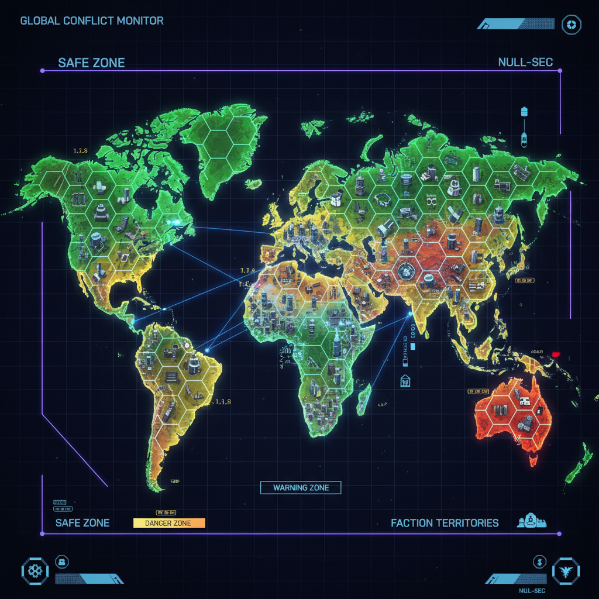
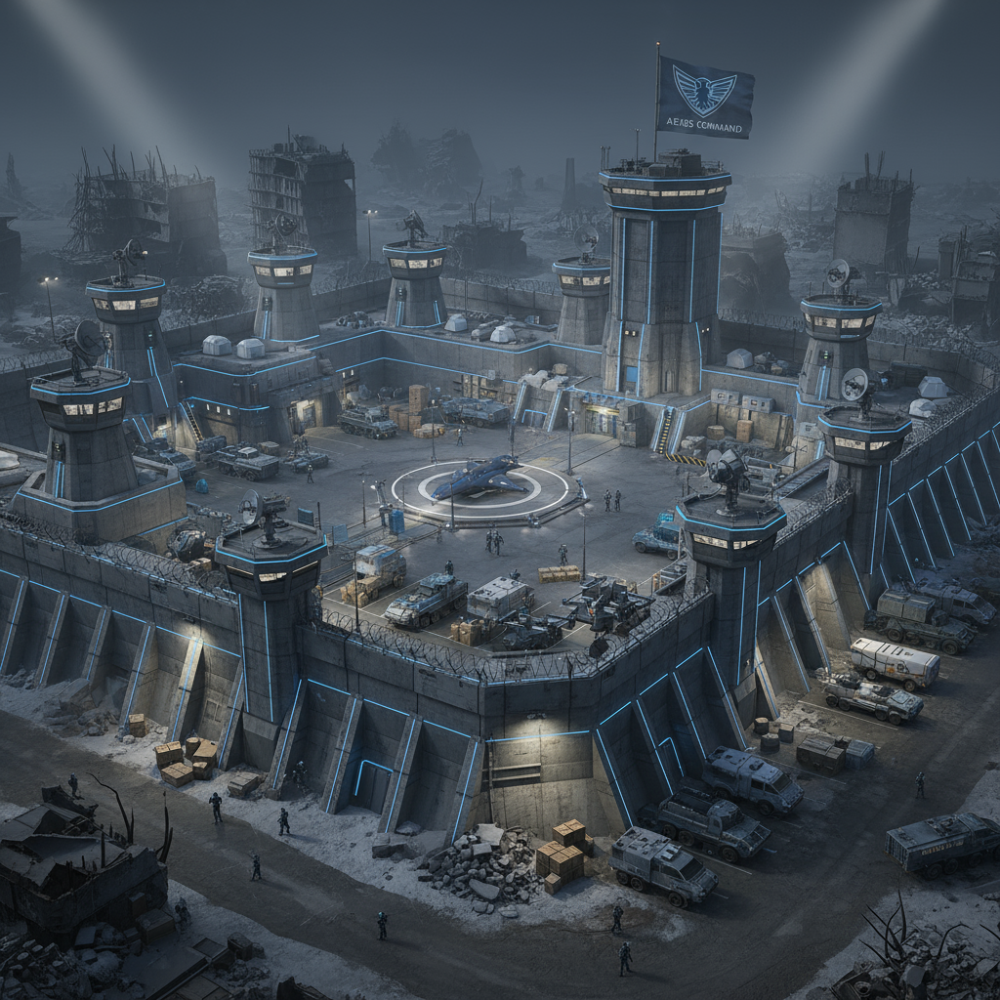
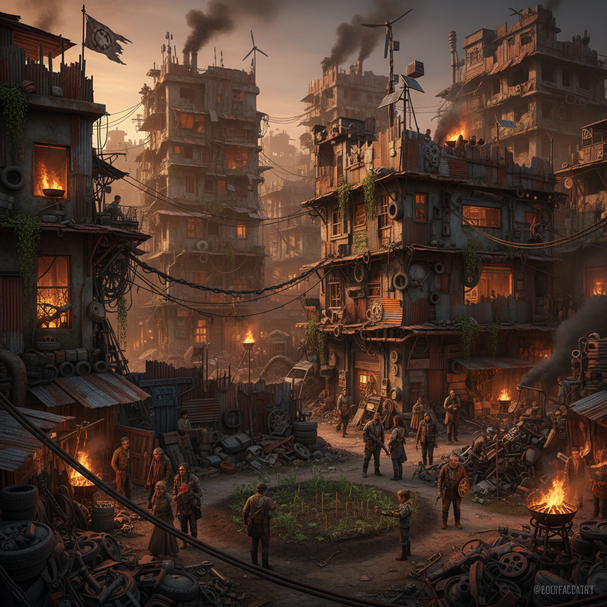
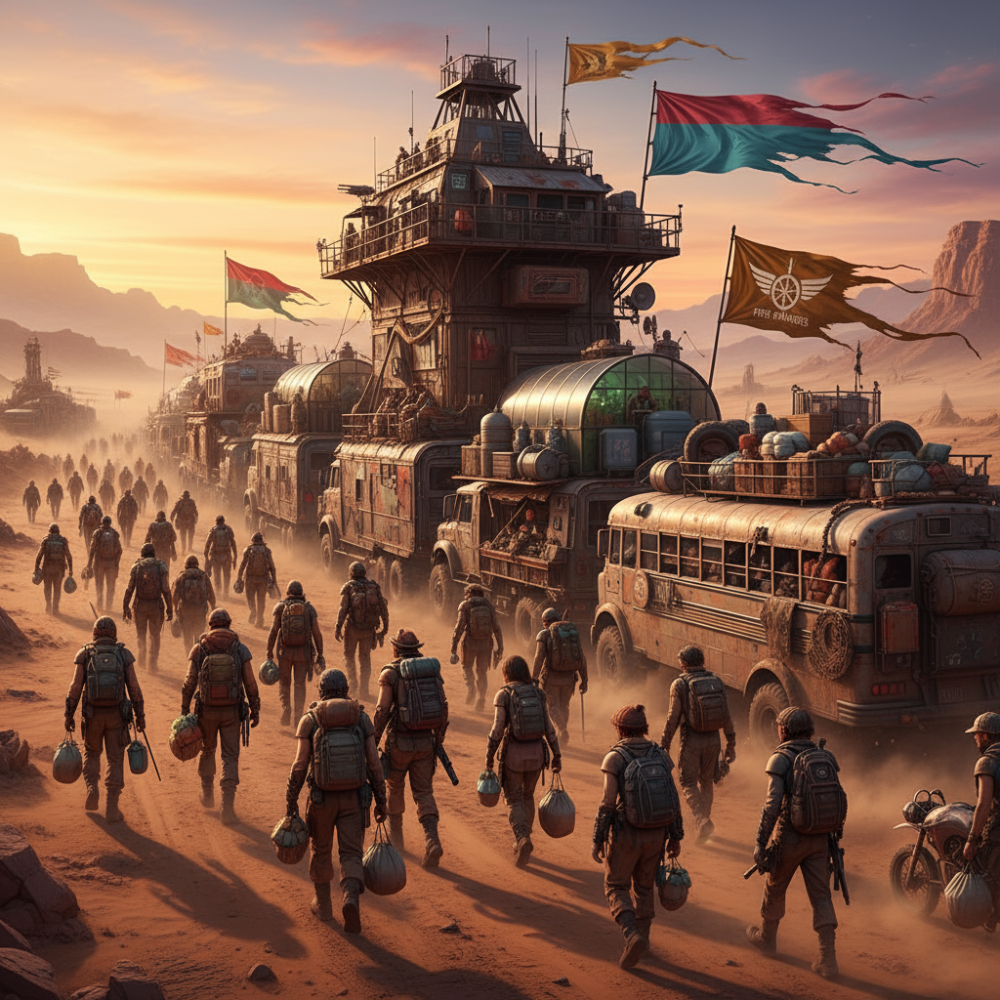

Исследуйте постапокалиптический мир с четырьмя уникальными фракциями
Игровой мир состоит из отдельных квадратов (зон), соединенных дорогами. Это позволяет динамически подгружать только активные зоны с игроками.
Зоны 1.0-0.1 принадлежат NPC-фракциям и служат безопасными хабами для торговли. Зоны 0.0 (Null-Sec) - это дикие земли с полной свободой PvP.

Интерактивная карта зон безопасности и территориального контроля

Бывшие военные и силовые структуры, создавшие авторитарное сообщество. Ценят дисциплину, порядок и контроль над территориями.

Группы выживших, объединившихся для совместного выживания. Мастера импровизации и использования подручных материалов.
Учёные и исследователи, стремящиеся понять природу катастрофы и найти способ восстановить цивилизацию.

Кочевые торговцы и искатели приключений, путешествующие между территориями. Связующее звено между различными фракциями.
Для атаки вражеской базы необходимо сначала захватить все прилегающие территории. Это снимает бонус снижения шума с защищающейся стороны и позволяет атакующей использовать громкое оружие без риска коллапса.
Захваченные территории могут содержать Уникальные Точки Интереса (пожарные части, госпитали и т.д.), дающие клану-владельцу особые бонусы.
Контроль буферных зон для снижения шума